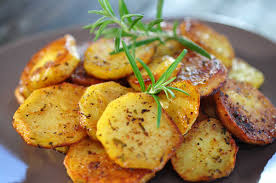
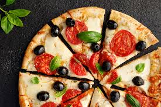

Bratkartoffeln
Bratkartoffeln sind ein zeitloser Favorit, der mit minimalem Aufwand maximalen Geschmack liefert. Ob als deftiges Frühstück, sättigende Beilage oder sogar Hauptgericht – dieses Gericht bringt Gemütlichkeit auf den Teller. In nur etwa 10 Minuten kannst du knusprige Bratkartoffeln zaubern, die jeden begeistern.
Lust auf was Neues?

Burger oder Pizza – Wer trägt die Krone?
Der Burger punktet mit seiner Vielseitigkeit – saftiges Patty,
frisches Gemüse und unzählige Toppings machen ihn zum
Individualisten. Pizza hingegen ist der Teamplayer, perfekt zum
Teilen, mit knusprigem Teig und einer Geschmacksexplosion aus
Tomate, Käse und Co. Geschmacklich hängt es von der Zubereitung
ab, aber die Pizza hat oft die Nase vorn durch ihre universelle
Beliebtheit und kulturelle Vielfalt. Am Ende entscheidet der
Moment: Lust auf handheld oder geselliges Teilen? Die Krone bleibt
geteilt – beide sind Kult!
